从手的解剖，
到光线里的相遇。
V5 更换了具有真实 UV、皮肤与指甲的解剖手模，重新绑定手指与前臂；同时调整软箱光照、真实深度景深、雾中显露和长按反馈。下面均为本项目实际运行结果，没有使用参考录屏帧充当背景或手部动画。
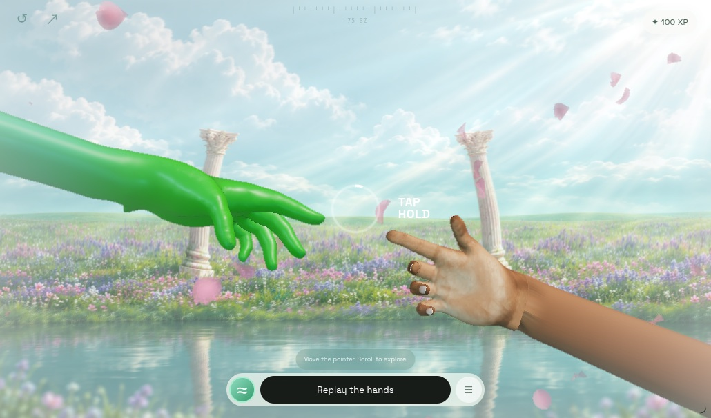
先看实际操作。
以实际鼠标输入驱动生产控制器。视频按审核时钟取帧，不能用编码帧率代表硬件实时性能；实际方法和结果见验证 JSON。
与 V4 实际画面对照。
两侧为本项目自己的运行截图。输入位置与取帧时刻可能不同，用于比较轮廓、材质和构图，不作为像素一致性的证明。
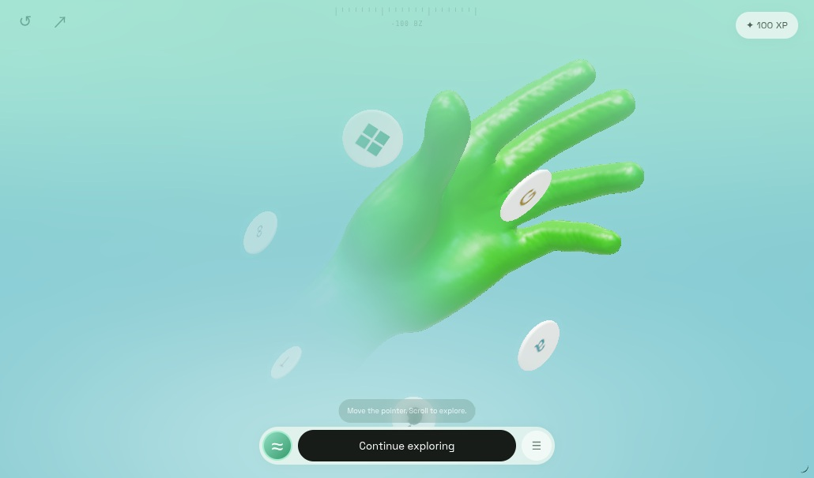
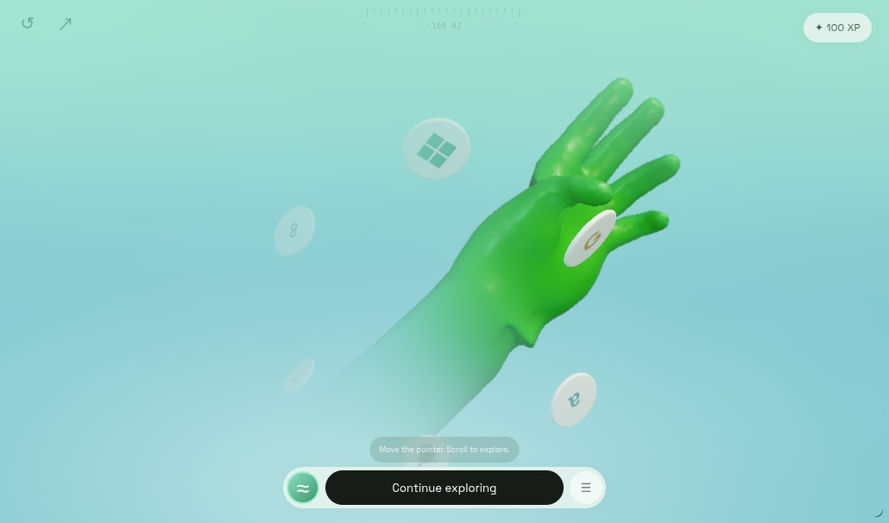
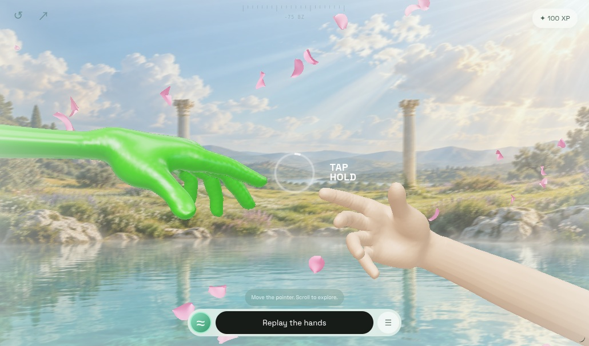
手本身跟随、收握。
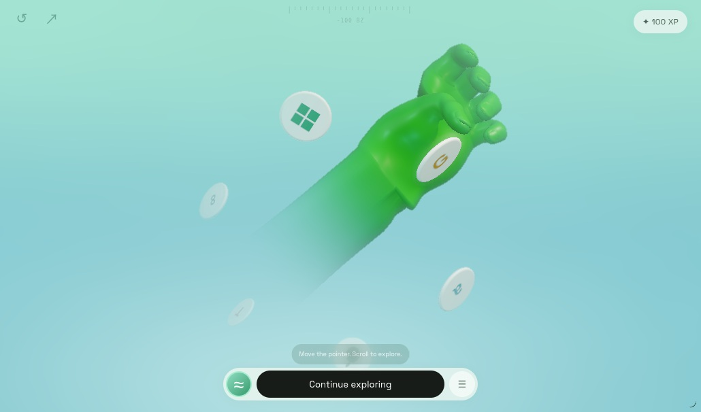
从雾中露出，继续向前。
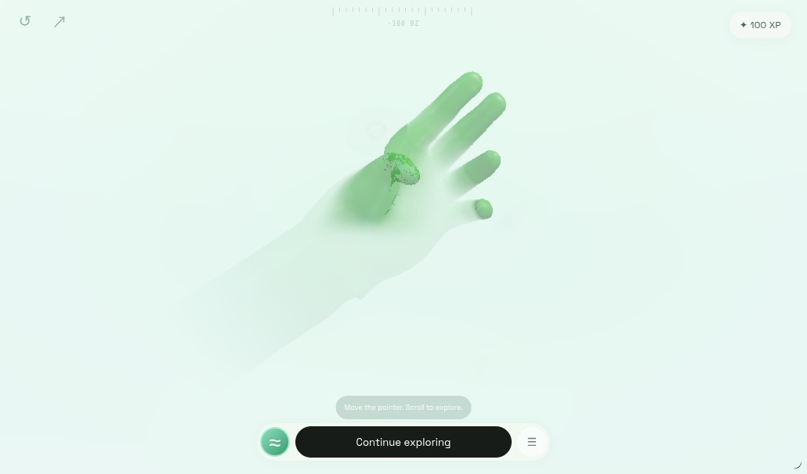
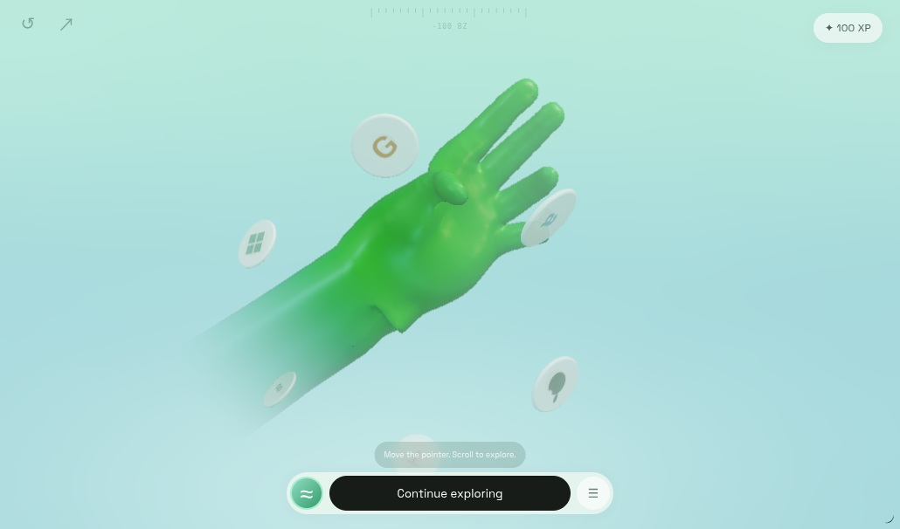
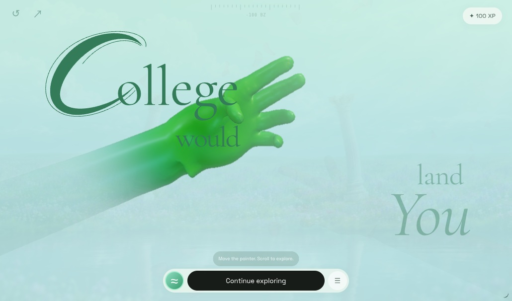
长按有连续的两个阶段。
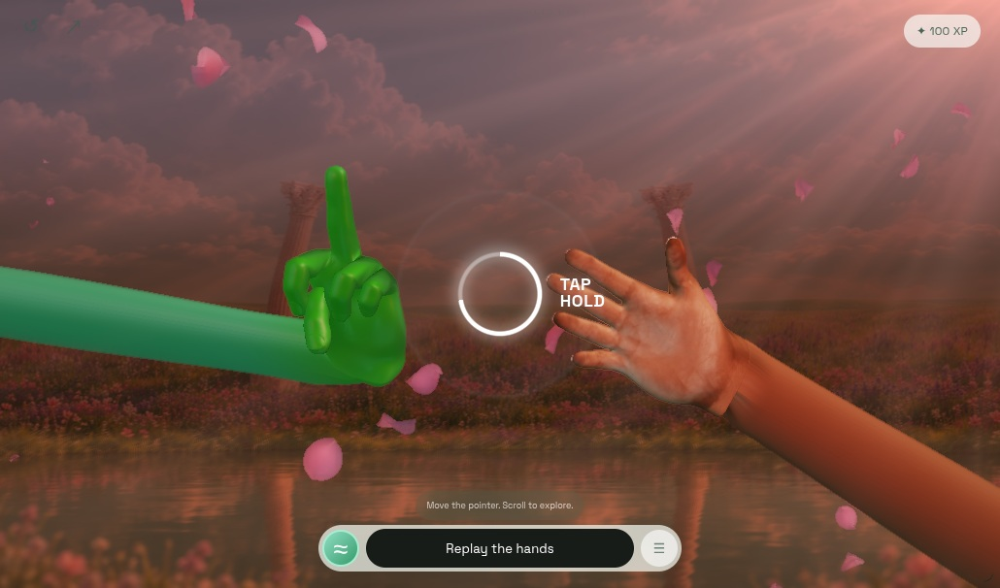
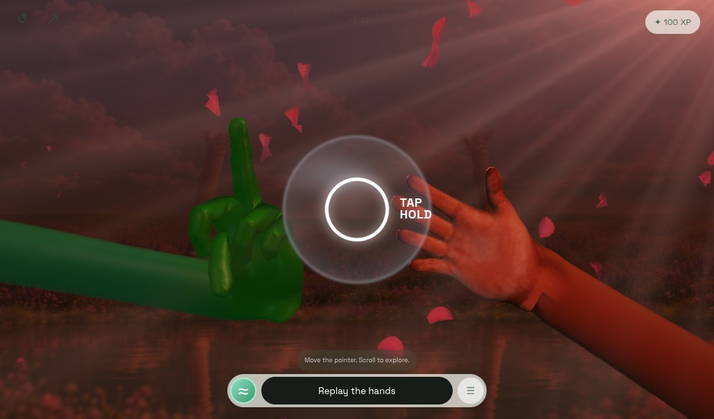
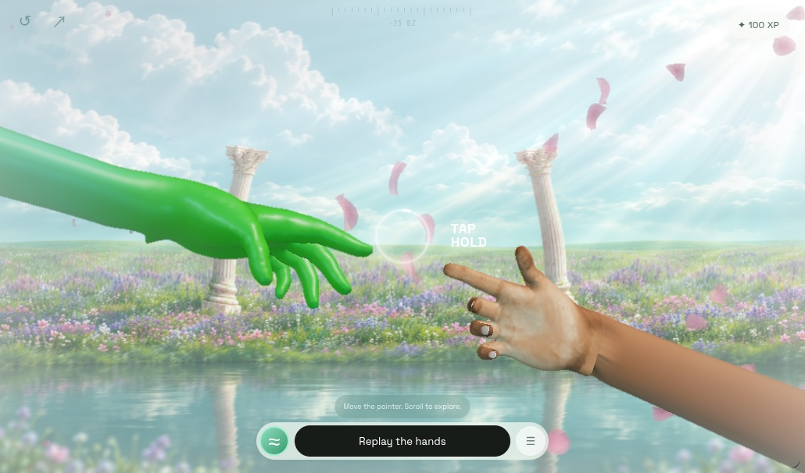
模型可编辑，来源明确。
手模基于 Rigged hand，作者 Elena FF，按 CC BY-SA 4.0 使用。修改后的模型、纹理和源几何继续采用相同许可。再分发修改资产时保留作者署名与同一许可。
操作与测试边界。
| 桌面 | 移动鼠标、按下收握、滚轮推进；双手场景按住中央目标，继续长按观察后续反馈。 |
|---|---|
| iPad | 拖动手指、竖向滑动推进、长按目标；也可使用下方按钮和章节菜单。 |
| 三维范围 | 手、圆牌、花瓣和命中目标是真实三维。默认背景仍为原创 2.5D 花园，景深和折射来自实时合成，不称完整三维地形。 |
| 视觉边界 | 仍是独立资产与实现。手部解剖、皮肤、字形、光照和场景参数仍需逐帧比较，不以代码运行或测试数量代替视觉判断，也不宣称像素完全一致。 |
| 测试环境 | 实际环境和检查结论见对应报告。Linux Chromium / SwiftShader 与 CDP 模拟触控不等同于实体 iPad Safari；尚未做 Safari 实机测试。 |